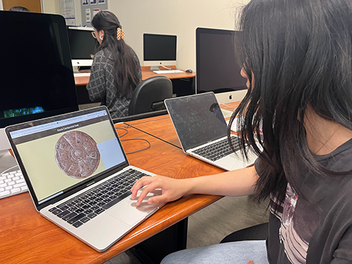
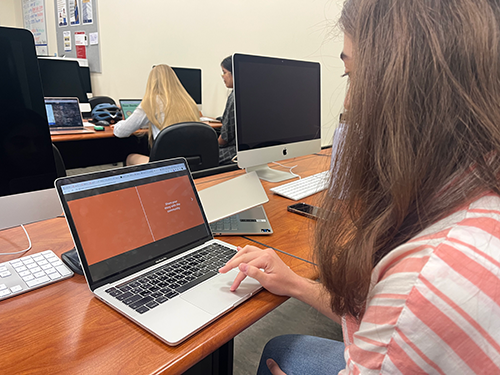

Observations From User Testing
Both groups gave me feedback that having a better indication of which section is clickable would be nice and user-friendly. The user testing made me focus and question who the target audience is, how I want to make the project more interesting, and what kind of vibe I am going for.
Tester 1 : Kimberly & Matthew
- The 3 sections can stand out more by adding some animations like expanding or zooming in to each section when they are hovered over.
- Instead of placing a project overview section on the top of the page, another idea would be to have an icon like a question mark or a letter i for information placed on the top right of the page. This way, the whole seal can still grab the user’s attention while giving the option to read the project brief and understand the mission of the project.
- The color palette of the website can be changed by adding some blue because blue is a color that is commonly found in Davis.
Tester 2: Dilara
- Similar to tester 1, adding a glow effect, fade-in, or an icon when the mouse hovers over each section would give a better clue to the user that that section is clickable.
- Zooming in or enlarging a section could be a cool idea when the section is clicked.
- Changing the title that includes some keywords like inclusivity would help the users easily understand what the theme for the project is.
- The orange color is bright and nice, but the overall color scheme is a bit gloomy. The color palette can be changed depending on how I want the users to feel. (welcoming? serious?)
Plans on Updating My Capstone Project
I plant to ...
- add a filter or an animation to the 3 panels that are clickable for better clues for the users.
- change the color palette that is more welcoming to the users
- change the name/title
- add more context/information
- add a section for submitting responses and viewing them
- add an introduction that explains the project brief
back